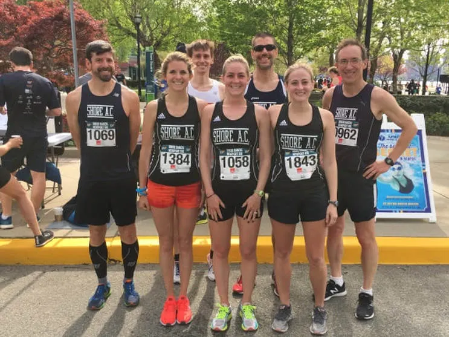
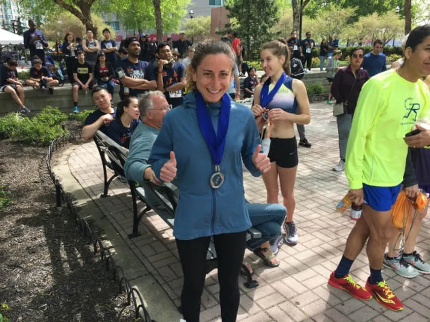
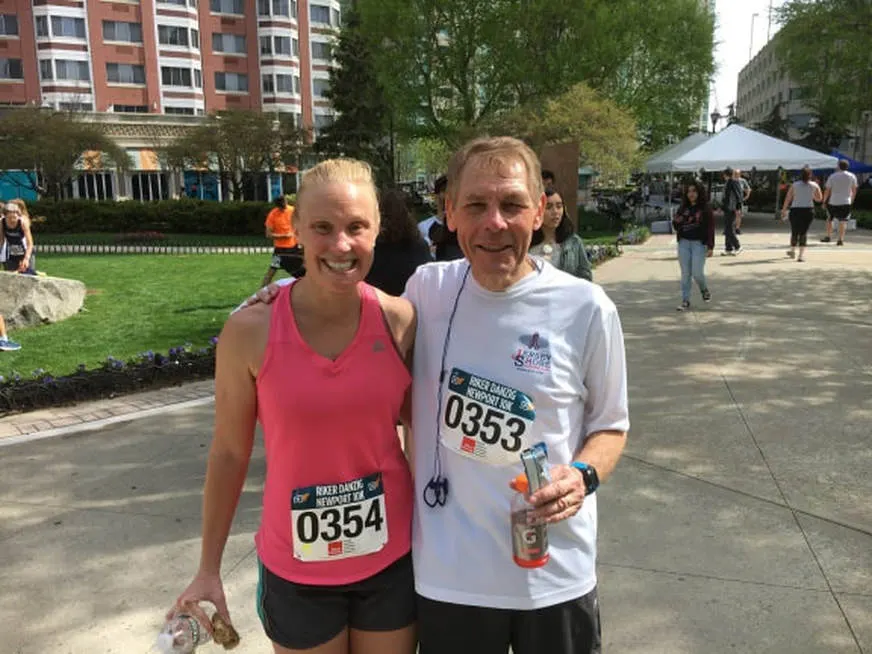
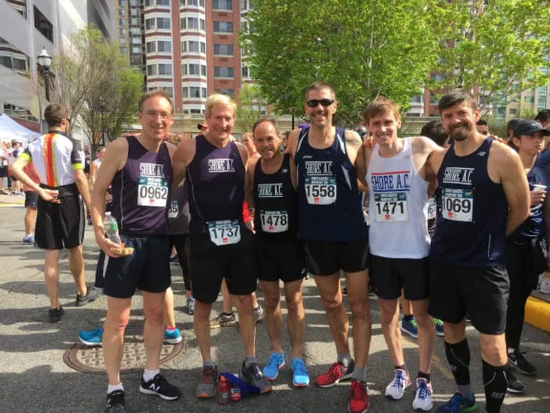

{kind=link}

May 5, 2018, Jersey City, NJ: Members of the victorious Shore AC women's open team beam with pride, while supporting cast men share in the joy. Front L-R: Lindsay Ritchings, Kellee McEwen and Kendal Hand. Rear L-R: Tim McQueen, Justin Scheid, Bob Skorup
Shore AC Results for the 2018 USATF-NJ Newport 10K Race in Jersey City, NJ
May 5, 2018, Jersey City, NJ: Members of the victorious Shore AC women's open team beam with pride, while supporting cast men share in the joy. Front L-R: Lindsay Ritchings, Kellee McEwen and Kendal Hand. Rear L-R: Tim McQueen, Justin Scheid, Bob Skorup.
Race Date: May 5, 2018
Results from CompuScore
SHORE AC TEAM RESULTS:
OPEN WOMEN:
1. SHORE AC "A" OPEN WOM 3:23:02.70 AVERAGE: 40:36.54
29. Amanda Marino Asbury Park,NJ 28 F 336 U 28 35:00.41*
68. Lindsay Ritchings New York,NY 29 F 336 U 1384 38:47.52*
91. Ashley Hart Jersey City,NJ 30 F 336 U 669 40:36.32*
113 .Kellee Mcewen Howell,NJ 30 F 336 U 1058 41:56.53*
208. Jayne Condon Wall,NJ 30 F 336 U 354 46:41.92*
222. Kendal Hand Howell,NJ 24 F 336 U 1843 47:15.47
374. Laura Donnelly Princeton Jct,NJ 52 F 336 U 1888 50:48.11
OPEN MEN:
7 SHORE AC "A" OPEN MEN 3:21:02.30 AVERAGE: 40:12.46
23. Justin Scheid Succasunna,NJ 32 M 36 U 1471 34:05.42*
67. Robert Skorupski Rockaway,NJ 45 M 36 U 1558 38:44.14*
106. Timothy Mcqueen Ogdensburg,NJ 46 M 36 U 1069 41:30.39*
138. Donald Schwartz Manalapan,NJ 57 M 36 1478 43:20.33*
139. Scott Linnell Colts Neck,NJ 61 M 36 U 962 43:22.02*
292. Mike Washakowski Monmouth Bch,NJ 66 M 36 U 1737 49:06.30
1543. Eliot Collins Raritan,NJ 66 M 36 U 351 1:19:39.33
May 5, 2018, Jersey City, NJ: Members of the victorious Shore AC women's open team beam with pride, while supporting cast men share in the joy. Front L-R: Lindsay Ritchings, Kellee McEwen and Kendal Hand. Rear L-R: Tim McQueen, Justin Scheid, Bob Skorup.
Race Date: May 5, 2018
Results from CompuScore
SHORE AC TEAM RESULTS:
OPEN WOMEN:
1. SHORE AC "A" OPEN WOM 3:23:02.70 AVERAGE: 40:36.54
29. Amanda Marino Asbury Park,NJ 28 F 336 U 28 35:00.41*
68. Lindsay Ritchings New York,NY 29 F 336 U 1384 38:47.52*
91. Ashley Hart Jersey City,NJ 30 F 336 U 669 40:36.32*
113 .Kellee Mcewen Howell,NJ 30 F 336 U 1058 41:56.53*
208. Jayne Condon Wall,NJ 30 F 336 U 354 46:41.92*
222. Kendal Hand Howell,NJ 24 F 336 U 1843 47:15.47
374. Laura Donnelly Princeton Jct,NJ 52 F 336 U 1888 50:48.11
OPEN MEN:
7 SHORE AC "A" OPEN MEN 3:21:02.30 AVERAGE: 40:12.46
23. Justin Scheid Succasunna,NJ 32 M 36 U 1471 34:05.42*
67. Robert Skorupski Rockaway,NJ 45 M 36 U 1558 38:44.14*
106. Timothy Mcqueen Ogdensburg,NJ 46 M 36 U 1069 41:30.39*
138. Donald Schwartz Manalapan,NJ 57 M 36 1478 43:20.33*
139. Scott Linnell Colts Neck,NJ 61 M 36 U 962 43:22.02*
292. Mike Washakowski Monmouth Bch,NJ 66 M 36 U 1737 49:06.30
1543. Eliot Collins Raritan,NJ 66 M 36 U 351 1:19:39.33
{kind=link}

May 5, 2018, Jersey City: Amanda Marino celebrates her phenomenal second place performance of 35:00 at the Newport 10K
Shore AC Women Sail to Victory at Newport 10K
Excitement lit the faces of the Shore AC ladies as they prepared for the third USATF-NJ team championship race of 2018: the Newport 10K in Jersey City. Was it the cool breeze that buffeted the waterfront? The dynamism of a revitalized metropolis? The prospect of post-race beer on Cinqo De Mayo? Whatever motivated them, it filled their sails and drove them through the concrete canyons with foam seemingly spraying from their blazing shoes. In fact, these outstanding gals sped down the streets so fast that they won the team championship!
Their victory did not come easily. The Shore AC ladies edged out a superb crew from Garden State Track Club by a mere 4 seconds! Leading the SAC armada was Villanova and Jackson Memorial star Amanda Marino. She shredded the 6-mile course in a jaw-dropping 35:00. Point Pleasant Beach star Lindsay Ritchings deftly rode the waves in Amanda's wake, surfing to a superb 38:47 as sencond team scorer. The third team slot was filled by a newcomer to USATF-NJ team championship racing: Ashley Hart. Well-known to attendees of the yearly Shore AC Cross Country Series, Ashley debuted on the state-level stage with a heart-pounding 40:36. Fourth across the finish line was SAC veteran Kellee McEwen. She returned to action with a magnificent 41:56 -- all the more remarkable considering this was her first team championship race after a matriachal sabbatical from running. Team scoring wrapped up when Jayne Condon jolted the clock in 46:41. Jayne's performance was no doubt enhanced by the brand new running shoes that she had purchased at Target 30 minutes before the start of the race! Former Shore AC summer intern Kendal Hand(47:15) and ubiquitous Shore AC masters competitor Laura Donnelly (50:48) provided all-important insurance. CONGRATULATIONS, LADIES!!!
Excitement lit the faces of the Shore AC ladies as they prepared for the third USATF-NJ team championship race of 2018: the Newport 10K in Jersey City. Was it the cool breeze that buffeted the waterfront? The dynamism of a revitalized metropolis? The prospect of post-race beer on Cinqo De Mayo? Whatever motivated them, it filled their sails and drove them through the concrete canyons with foam seemingly spraying from their blazing shoes. In fact, these outstanding gals sped down the streets so fast that they won the team championship!
Their victory did not come easily. The Shore AC ladies edged out a superb crew from Garden State Track Club by a mere 4 seconds! Leading the SAC armada was Villanova and Jackson Memorial star Amanda Marino. She shredded the 6-mile course in a jaw-dropping 35:00. Point Pleasant Beach star Lindsay Ritchings deftly rode the waves in Amanda's wake, surfing to a superb 38:47 as sencond team scorer. The third team slot was filled by a newcomer to USATF-NJ team championship racing: Ashley Hart. Well-known to attendees of the yearly Shore AC Cross Country Series, Ashley debuted on the state-level stage with a heart-pounding 40:36. Fourth across the finish line was SAC veteran Kellee McEwen. She returned to action with a magnificent 41:56 -- all the more remarkable considering this was her first team championship race after a matriachal sabbatical from running. Team scoring wrapped up when Jayne Condon jolted the clock in 46:41. Jayne's performance was no doubt enhanced by the brand new running shoes that she had purchased at Target 30 minutes before the start of the race! Former Shore AC summer intern Kendal Hand(47:15) and ubiquitous Shore AC masters competitor Laura Donnelly (50:48) provided all-important insurance. CONGRATULATIONS, LADIES!!!
{kind=link}

May 5, 2018, Jersey City: Jayne Condon and her father Bill enjoy the satisfaction of a race well run.
Shore AC's men stood tall as well in this highly competitive race. They placed seventh within a field of seventeen teams. 2017 Johnny Hayes award winnerJustin Scheid, still in recovery mode from a brutal Boston Marathon 3 weeks prior, coasted through the city in 34:05 -- pedestrian for him but mind-bendingly fast for the rest of us. Another 2018 Boston finisher, the stalwart Bob Skorupski, shook out his leftover aches and pains with a fine 38:44. Rookie sensation Tim McQueen filled the third scoring slot by registering an excellent 41:30. Number four Shore AC finisher Don Schwartz made his first race in a SAC uniform memorable as he crossed in 43:20, fourth in his 55-59 age group. Well done, Don! Final team scorer Scott Linnell clicked the stopwatch two seconds behind Don in 43:22. Backing up the scorers were club veterans Mike Washakowski(49:06) and Eliot Collins (1:19:39), ensuring that the team would rank even if one of the top five dropped out of the race. Well done, gentlemen!

May 5, 2018, Jersey City: Shore AC men soak in the glorious early May sunshine. L-R: Scott Linnell, Mike Washakowski, Don Schwartz, Bob Skorupski, Justin Scheid and Tim McQueen.
Individual Accomplishments:
Shore AC athletes distinguished themselves with some fantastic top 3 age group performances. First however, let us recognize our top 10 overall finisher:
· Amanda Marino: 2nd overall female: 35:00; 86.63%
Now, how about those top-3 age group finishers!
While we're at it, let us congratulate our other top-10 age group athletes!
Shore AC athletes distinguished themselves with some fantastic top 3 age group performances. First however, let us recognize our top 10 overall finisher:
· Amanda Marino: 2nd overall female: 35:00; 86.63%
Now, how about those top-3 age group finishers!
- Lindsay Ritchings: 1st F25-29: 38:47; 78.18% age grading
- Justin Scheid: 1st M30-34: 34:05; 78.48%
- Ashley Hart: 2nd F30-34: 40:36; 74.69%
- Amber Hart: 1st F35-39: 44:57; 69.06%
- Robert Skorupski: 2nd M45-49: 38:44; 74.40%
- Kim Hart: 1st F55-59: 49:03; 77.18%
- Scott Linnell: 3rd M60-64: 43:22; 76.31%
While we're at it, let us congratulate our other top-10 age group athletes!
- Kendal Hand: 5th F20-24: 47:15; 64.18%
- Kellee McEwen: 4th F30-34: 41:56; 72.31%
- Jayne Condon: 7th F30-34: 46:41; 64.96%
- Tim McQueen: 7th M45-49: 41:30; 70.01%
- Laura Donnelly: 6th F50-54: 50:48; 69.09%
- Donald Schwartz: 4th M55-59: 43:20; 73.64%
- Mike Washakowski: 4th M65-69: 49:06; 70.68%
0 Comments